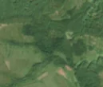
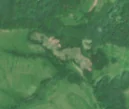

7,5 ha de pădure schimbată lângă Abud
Între vara lui 2025 și 24 aprilie 2026, pe aproximativ 7,5 ha de pădure din comuna Ghindari, lângă Abud, județul Mureș, imaginile Sentinel-2 arată că vegetația a dispărut sau s-a schimbat puternic. În registrul public există o autorizație de tăiere pentru acest loc.
Autorizația de tăiere
probabil cu autorizație
Am găsit o autorizație de tăiere pentru locul ăsta, dar registrul nu ne lasă să confirmăm că acoperă exact tăierea pe care o vedem.
Ce se vede în poze: În poza «înainte» și în poza detaliată, zona marcată era acoperită de arbori deși, iar în poza «după» apar pete late, golașe, de culoare deschisă, în timp ce pădurea din jur rămâne verde. Aceasta arată că arborii au fost tăiați pe o suprafață întinsă.


Înainte și după: Copernicus Sentinel-2, 10 m pe pixel, conturul zonei cu portocaliu. Poza detaliată (Esri World Imagery) e de acum 1–4 ani: arată ce era acolo înainte, nu tăierea.
Pe scurt
- Identificator
- 20260424_46518_24895
- Locul
- Abud, comuna Ghindari, județul Mureș (SIRUTA 117042)
- Coordonate (centru)
- 46.51798, 24.89539 · Google Maps · OpenStreetMap
- Suprafața
- 7,5 ha (din pixeli de 10 m; ± câțiva pixeli pe margine)
- Pădurea întreagă
- în vara lui 2025 (de atunci, nori sau iarnă)
- Prima imagine cu schimbarea
- 24 aprilie 2026
- Imagini în care se vede schimbarea
- 9
- Cât de sigur e semnalul din satelit
- medie
- Autorizația cea mai apropiată
- APV 2500138501120 · Filiala Ocolul Silvic Ghindari, la 23 m de zonă
- Terenul
- pădure de stat, după amenajamentul silvic publicat
- Arie protejată
- Dealurile Târnavei Mici - Bicheș, Dealurile Târnavelor și Valea Nirajului
- Garda Forestieră
- Brașov
Dacă vrei să verifici sau să sesizezi
- Pădurile din județul Mureș sunt în grija Gărzii Forestiere Brașov, care controlează tăierile și dă amenzile.
- Autorizația găsită în zonă e emisă de Filiala Ocolul Silvic Ghindari.
- Formularul Gărzii Forestiere Naționale primește sesizări și fără nume. Trimite linkul acestei pagini, coordonatele și pozele. Dacă tăierea e în desfășurare, sună la 112.
- Autorizațiile și transporturile de lemn se pot căuta în Inspectorul Pădurii.
Pagina arată ce se vede din satelit și ce scrie în registrul public; nu e o dovadă în sine.
Cum citezi zona
Linkul acestei pagini nu se schimbă. Dacă zona iese vreodată de pe hartă, pagina rămâne, cu data și cu ce știam despre ea.
Pădurea RO, zona 20260424_46518_24895: 7,5 ha, Abud, comuna Ghindari, județul Mureș; schimbare văzută din satelit între vara lui 2025 și 24 aprilie 2026. https://iliemihai.github.io/padurea-ro/zona/20260424_46518_24895/ (consultat la [data]). Date: CC BY 4.0.
Datele zonei: GeoJSON · toate zonele: date deschise · licența CC BY 4.0.
Istoricul zonei pe hartă
Starea se poate schimba când registrul publică o autorizație sau când analistul vede poze mai bune. O ținem aici, ca un link citat să arate și ce spuneam atunci.
Pe hartă cel târziu din 5 noiembrie 2026.
- 5 noiembrie 2026 – azi · probabil cu autorizație
Detalii tehnice, pentru verificare
De ce acest nivel de încredere:
- văzută schimbată în 9 imagini diferite
- peste 3 ha
- ultima dată am văzut-o intactă în vara lui 2025 (de atunci, nori sau zăpadă)
- AI-ul vede pădure dispărută
Ce a văzut analistul cu context: În poza detaliată din 2024 coronamentul este în mare parte continuu, cu zone mai deschise spre margini. În imaginea Sentinel-2 din 2026 apar pete cu sol dezgolit sau resturi de exploatare, de culoare bej-gri, cu margini ascuțite, pe o fâșie diagonală, iar pădurea din jur rămâne verde (nu e sezon, nu e foc). Forma nu continuă ca drum sau conductă în afara conturului. Coronamentul de 90% în 2000 și acoperirea cu copaci de 100% susțin pădurea închisă. Un permit de exploatare (APV) se află la 23 m, deși fără suprapunere, ceea ce face tăierea plauzibilă, dar nu confirmă legalitatea. Zona este în arie protejată. Incertitudinea vine din marginea cu pășune și din rezoluția mică a imaginii.
- Placa Sentinel-2
- 34TGS
- NDVI de referință
- 0.85
- NBR de referință
- 0.66
- Scăderea în pădurea din jur
- 0.09
- Persistență
- 0.99
- NDVI / NBR după
- 0.411 / 0.069
- Analistul de zi (model)
- taiere · 0.85 · claude-haiku-5-5
- Analistul cu context (model)
- taiere_rasa · 0.68
Cum se calculează fiecare: metodologia.
Pune harta zonei într-un articol
Copiază codul în articol (merge în majoritatea site-urilor de știri). Sau pune doar linkul: WhatsApp, Facebook și X arată singure poza zonei.